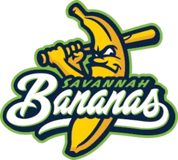

FBL · 2B
Joe Thurston
- Team
- Savannah Bananas
- Position
- 2B
- Bats/Throws
- L/R
- Height/Weight
- 5'11", 225 lb
- Born
- Sep 29, 1979 in Fairfield, CA
- Age
- 22
- Uniform
- #41
- Salary
- $244,000
AVG/OBP/SLG.237/.310/.289
HR0
RBI0
SB2
OPS+58league = 100
WAR-0.2OOTP
2002 batting
| Team | Lg | G | PA | AB | R | H | 2B | 3B | HR | RBI | BB | K | SB | AVG | OBP | SLG | OPS |
|---|---|---|---|---|---|---|---|---|---|---|---|---|---|---|---|---|---|
| SaSa | FBL | 14 | 42 | 38 | 6 | 9 | 2 | 0 | 0 | 0 | 2 | 2 | 2 | .237 | .310 | .289 | .599 |
2002 batting, advanced
| Team | Lg | PA | Pit/PA | SH | SF | HBP | IBB | GIDP | CS | OPS+ | ISO | BABIP | BB% | K% | WPA | UBR | WAR |
|---|---|---|---|---|---|---|---|---|---|---|---|---|---|---|---|---|---|
| SaSa | FBL | 42 | 2.95 | 0 | 0 | 2 | 0 | 3 | 1 | 58 | .053 | .250 | 4.8% | 4.8% | -0.97 | -0.5 | -0.2 |
Streaks
Longest hitting streak: 4 games (Apr 30 to May 9); current: 4
Longest on-base streak: 4 games (Apr 30 to May 9); current: 4
Batting splits
| Split | G | PA | AB | R | H | 2B | 3B | HR | RBI | BB | K | SB | AVG | OBP | SLG | OPS | ISO | BABIP | BB% | K% |
|---|---|---|---|---|---|---|---|---|---|---|---|---|---|---|---|---|---|---|---|---|
| vs LHP | 4 | 8 | 5 | 1 | 0 | 0 | 0 | 0 | 0 | 1 | 0 | - | .000 | .375 | .000 | .375 | .000 | .000 | 12.5% | 0.0% |
| vs RHP | 13 | 34 | 33 | 5 | 9 | 2 | 0 | 0 | 0 | 1 | 2 | - | .273 | .294 | .333 | .627 | .061 | .290 | 2.9% | 5.9% |
| Home | 3 | 13 | 10 | 4 | 3 | 1 | 0 | 0 | 0 | 1 | 0 | 0 | .300 | .462 | .400 | .862 | .100 | .300 | 7.7% | 0.0% |
| Road | 11 | 29 | 28 | 2 | 6 | 1 | 0 | 0 | 0 | 1 | 2 | 2 | .214 | .241 | .250 | .491 | .036 | .231 | 3.4% | 6.9% |
By month
| Month | G | PA | AB | R | H | 2B | 3B | HR | RBI | BB | K | SB | AVG | OBP | SLG | OPS | ISO | BABIP | BB% | K% |
|---|---|---|---|---|---|---|---|---|---|---|---|---|---|---|---|---|---|---|---|---|
| April | 11 | 33 | 30 | 4 | 6 | 2 | 0 | 0 | 0 | 2 | 2 | 2 | .200 | .273 | .267 | .539 | .067 | .214 | 6.1% | 6.1% |
| May | 3 | 9 | 8 | 2 | 3 | 0 | 0 | 0 | 0 | 0 | 0 | 0 | .375 | .444 | .375 | .819 | .000 | .375 | 0.0% | 0.0% |
Situational
| Situation | PA | AB | H | 2B | 3B | HR | RBI | BB | K | AVG | OBP | SLG | OPS |
|---|---|---|---|---|---|---|---|---|---|---|---|---|---|
| Bases empty | 22 | 18 | 7 | 2 | 0 | 0 | 0 | 2 | 1 | .389 | .500 | .500 | 1.000 |
| Runners on | 20 | 20 | 2 | 0 | 0 | 0 | 0 | 0 | 1 | .100 | .100 | .100 | .200 |
| Runners in scoring position | 14 | 14 | 1 | 0 | 0 | 0 | 0 | 0 | 0 | .071 | .071 | .071 | .143 |
| RISP, two outs | 8 | 8 | 1 | 0 | 0 | 0 | 0 | 0 | 0 | .125 | .125 | .125 | .250 |
| Innings 1-3 | 12 | 11 | 3 | 1 | 0 | 0 | 0 | 1 | 0 | .273 | .333 | .364 | .697 |
| Innings 4-6 | 12 | 11 | 1 | 0 | 0 | 0 | 0 | 1 | 0 | .091 | .167 | .091 | .258 |
| Innings 7-9 | 18 | 16 | 5 | 1 | 0 | 0 | 0 | 0 | 2 | .312 | .389 | .375 | .764 |
Situational splits are rebuilt from every plate appearance in the export (base/out state when the PA began). "RBI" counts runs batted in on that PA.
2002 batting game log
| Date | Opp | Score | Pos | Bat | PA | AB | R | H | 2B | 3B | HR | RBI | BB | K | SB | CS | HBP | GIDP | WPA |
|---|---|---|---|---|---|---|---|---|---|---|---|---|---|---|---|---|---|---|---|
| May 9 | @ MePh | L 1-3 | PH | 9 | 1 | 1 | 0 | 1 | 0 | 0 | 0 | 0 | 0 | 0 | 0 | 0 | 0 | 0 | 0.050 |
| May 6 | vs LoBa | L 4-10 | DH | 9 | 4 | 3 | 2 | 1 | 0 | 0 | 0 | 0 | 0 | 0 | 0 | 0 | 1 | 0 | -0.048 |
| May 3 | @ OKC | L 3-14 | DH | 5 | 4 | 4 | 0 | 1 | 0 | 0 | 0 | 0 | 0 | 0 | 0 | 0 | 0 | 0 | -0.109 |
| Apr 30 | vs VANC | L 8-10 | DH | 9 | 4 | 4 | 1 | 2 | 1 | 0 | 0 | 0 | 0 | 0 | 0 | 0 | 0 | 1 | 0.023 |
| Apr 27 | @ SB66 | L 4-5 | PH | 9 | 1 | 1 | 0 | 0 | 0 | 0 | 0 | 0 | 0 | 0 | 0 | 0 | 0 | 0 | -0.093 |
| Apr 21 | @ ChKn | W 9-5 | DH | 2 | 5 | 5 | 2 | 2 | 1 | 0 | 0 | 0 | 0 | 1 | 1 | 0 | 0 | 0 | 0.088 |
| Apr 17 | @ HOBK | L 3-7 | DH | 9 | 4 | 4 | 0 | 1 | 0 | 0 | 0 | 0 | 0 | 0 | 0 | 0 | 0 | 0 | -0.046 |
| Apr 15 | @ HOBK | W 6-4 | PH | 9 | 1 | 1 | 0 | 1 | 0 | 0 | 0 | 0 | 0 | 0 | 1 | 0 | 0 | 0 | 0.104 |
| Apr 10 | @ ALSK | L 3-5 | DH | 2 | 5 | 5 | 0 | 0 | 0 | 0 | 0 | 0 | 0 | 0 | 0 | 0 | 0 | 0 | -0.215 |
| Apr 9 | @ ALSK | L 1-2 | PH | 9 | 1 | 1 | 0 | 0 | 0 | 0 | 0 | 0 | 0 | 1 | 0 | 0 | 0 | 0 | -0.054 |
| Apr 8 | @ ALSK | L 2-4 | PH | 9 | 2 | 2 | 0 | 0 | 0 | 0 | 0 | 0 | 0 | 0 | 0 | 0 | 0 | 2 | -0.440 |
| Apr 7 | vs SARe | W 4-1 | SS | 2 | 5 | 3 | 1 | 0 | 0 | 0 | 0 | 0 | 1 | 0 | 0 | 0 | 1 | 0 | 0.010 |
| Apr 5 | @ HYG | L 2-6 | SS | 6 | 4 | 3 | 0 | 0 | 0 | 0 | 0 | 0 | 1 | 0 | 0 | 1 | 0 | 0 | -0.208 |
| Apr 3 | @ HYG | L 10-11 | PH | 7 | 1 | 1 | 0 | 0 | 0 | 0 | 0 | 0 | 0 | 0 | 0 | 0 | 0 | 0 | -0.035 |
2002 fielding by position
| Team | Lg | Pos | G | GS | Inn | TC | PO | A | E | DP | FPct | ZR | Arm | Framing | SB | CS | CS% | PB |
|---|---|---|---|---|---|---|---|---|---|---|---|---|---|---|---|---|---|---|
| SaSa | FBL | SS | 3 | 2 | 19.0 | 8 | 2 | 6 | 0 | 1 | 1.000 | 0.1 | - | - | - | - | - | - |
ZR (zone rating), Arm and Framing are OOTP's runs-above-average figures. SB/CS/CS% are base stealers against him as a catcher.
Career batting
| Year | Team | Lvl | G | PA | AB | R | H | 2B | 3B | HR | RBI | BB | K | SB | AVG | OBP | SLG | OPS | WAR |
|---|---|---|---|---|---|---|---|---|---|---|---|---|---|---|---|---|---|---|---|
| 1999 | SB66 | A | 2 | 4 | 3 | 0 | 0 | 0 | 0 | 0 | 0 | 0 | 1 | 0 | .000 | .250 | .000 | .250 | -0.0 |
| 1999 | T | Short-A | 71 | 334 | 277 | 48 | 79 | 10 | 3 | 0 | 32 | 27 | 34 | 27 | .285 | .387 | .343 | .730 | 2.1 |
| 2000 | SB66 | A | 138 | 641 | 551 | 97 | 167 | 31 | 8 | 4 | 70 | 56 | 61 | 43 | .303 | .380 | .410 | .790 | 3.7 |
| 2001 | JUMB | AA | 134 | 616 | 544 | 80 | 145 | 25 | 7 | 7 | 46 | 48 | 65 | 20 | .267 | .338 | .377 | .715 | 2.4 |
| 2002 | SaSa | FBL | 14 | 42 | 38 | 6 | 9 | 2 | 0 | 0 | 0 | 2 | 2 | 2 | .237 | .310 | .289 | .599 | -0.2 |
| Top level | 14 | 42 | 38 | 6 | 9 | 2 | 0 | 0 | 0 | 2 | 2 | 2 | .237 | .310 | .289 | .599 | -0.2 |
Seasons before 2002 are the player's real-life record, listed under the franchise that holds that history in this universe. "Top level" totals count major-league-level seasons only.
Contract
| Year | Salary |
|---|---|
| 2002 | $244,000 |
1-year contract with Savannah Bananas.
Most frequent matchups pitchers he has faced
| Pitcher | AB | H | HR | AVG |
|---|---|---|---|---|
| Troy Mattes | 4 | 1 | 0 | .250 |
| Ryan Jensen | 3 | 0 | 0 | .000 |
| Roy Halladay | 3 | 0 | 0 | .000 |
| Brian Rose | 2 | 2 | 0 | 1.000 |
| Curt Leskanic | 2 | 0 | 0 | .000 |
| Masato Yoshii | 2 | 0 | 0 | .000 |
| Mark Buehrle | 2 | 0 | 0 | .000 |
| Rod Beck | 2 | 0 | 0 | .000 |
| Corey Thurman | 2 | 0 | 0 | .000 |
| Dicky Gonzalez | 2 | 0 | 0 | .000 |
| John Dillinger | 2 | 0 | 0 | .000 |
| Gabe Molina | 1 | 1 | 0 | 1.000 |
| Jose Nunez | 1 | 1 | 0 | 1.000 |
| Luther Hackman | 1 | 1 | 0 | 1.000 |
| Jimmy Serrano | 1 | 1 | 0 | 1.000 |